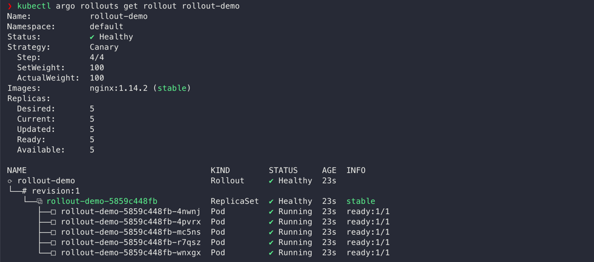
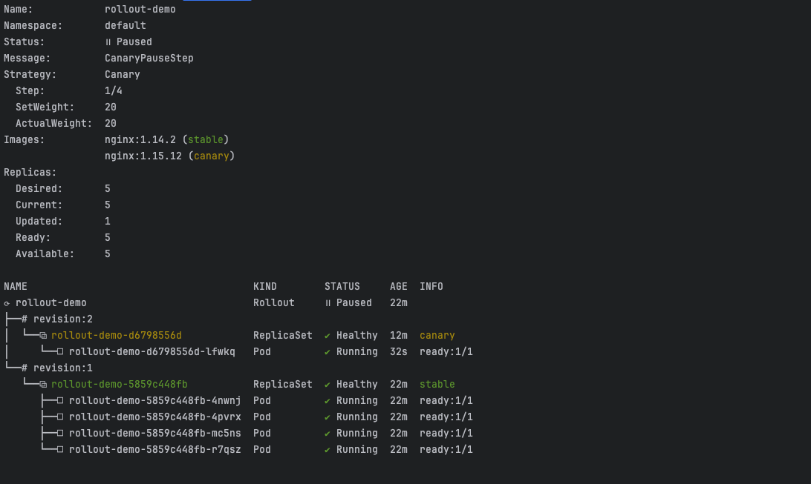
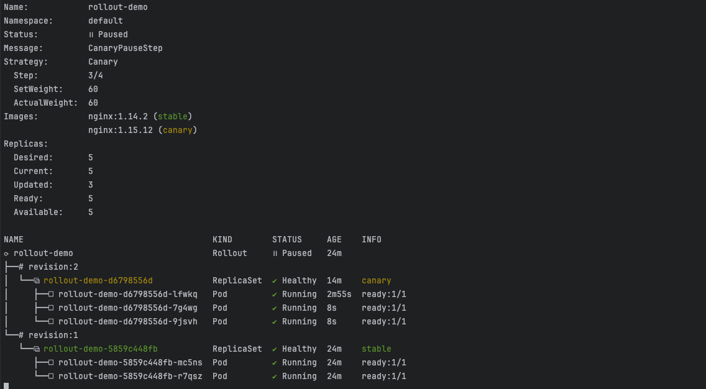
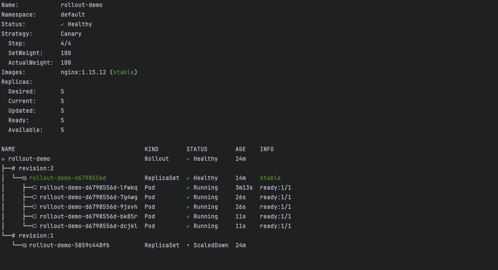
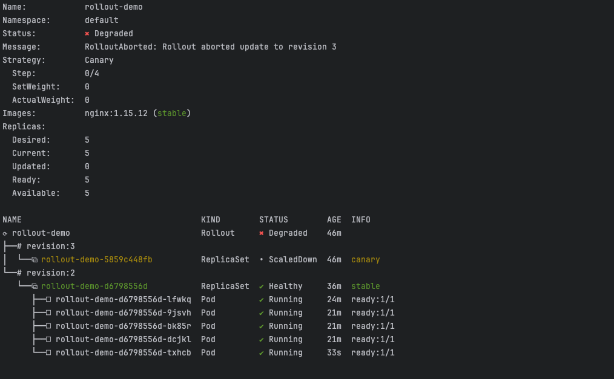

일반적으로 Kubernetes 클러스터 상에 애플리케이션을 구동하고 상태를 관리하기 위해서 Deployment1 리소스를 활용합니다. Deployment에는 애플리케이션의 목표 상태(i.e. 애플리케이션 Pod의 개수, 애플리케이션의 버전 등)가 저장되어 있어, 목표 상태와 클러스터 상의 실제 상태를 일치하도록 관리합니다. 이는 Kubernetes에서 기본으로 제공되는 리소스로서 매우 유용하지만, 새로운 버전의 애플리케이션을 배포할 때 몇가지의 문제를 마주치게 됩니다.
- 배포 진행 속도를 컨트롤할 수 없음
- Blue/Green, Canary 등의 고도화된 배포 전략을 제공하지 않음
- 배포 과정에 문제가 생겼을 때, 수동으로 문제를 감지하고 롤백해야 함
물론 쿠버네티스 기본 리소스만으로도 위와 같은 문제들을 해결할 수 있지만, 이는 복잡한 아키텍처 설계를 필요로 합니다.
Argo Rollouts2는 Deployments의 스펙을 확장해 위와 같은 문제를 대신 해결해주고, Progressive Delivery를 손쉽게 구축하도록 합니다.
Argo Rollouts
Argo Rollouts는 CNCF의 Graduated 프로젝트인 Argo에서 제공되는 오픈소스 Kubernetes 컨트롤러입니다.3 Rollout이라는 커스텀 리소스를 통해 Deployments 리소스를 확장하여 다양한 기능을 제공합니다.
- Blue/Green, Canary 등의 고도화된 배포 전략
- 트래픽 미러링, 헤더 기반 라우팅 등의 고도화된 트래픽 관리
- 메트릭 연동을 통한 자동 롤백
- Nginx/ALB/Istio와 같은 트래픽 provider와의 연동
Argo Rollouts 컨트롤러 설치
Kubernetes 클러스터에 Helm을 사용하여 설치합니다.
$ helm repo add argo https://argoproj.github.io/argo-helm
$ helm repo update
$ helm install argo-rollouts argo/argo-rollouts --namespace argo-rollouts --create-namespace
helm을 사용하지 않고 직접 설치하는 방법은 공식 문서에서 확인할 수 있습니다.
(optional) kubectl 플러그인 설치
필수는 아니지만, Argo Rollouts를 간편하게 모니터링하고 관리하기 위해 kubectl 플러그인이 제공됩니다. mac에서는 brew를 통하여 설치할 수 있습니다.
$ brew install argoproj/tap/kubectl-argo-rollouts
버전 매니저를 사용하지 않고 직접 설치하는 방법은 공식 문서에서 확인할 수 있습니다.
Rollout 리소스
Rollout 리소스는 기본적으로 아래와 같이 구성됩니다.
apiVersion: argoproj.io/v1alpha1
kind: Rollout
metadata:
name: rollout-demo
spec:
replicas: 5
revisionHistoryLimit: 1
selector:
matchLabels:
app: rollout-demo
template:
metadata:
labels:
app: rollout-demo
spec:
containers:
- name: nginx
image: nginx:1.14.2
imagePullPolicy: Always
ports:
- name: http
containerPort: 80
protocol: TCP
strategy:
canary:
steps:
- setWeight: 20
- pause: {}
- setWeight: 60
- pause: {duration: 10}
Deployment를 사용해보셨다면 눈치챘을 수 있는데요, Rollout 리소스는 Deployment와 매우 유사합니다.
.spec.replicas 필드에 배포할 pod의 갯수를, .spec.template 필드에 배포할 pod의 정보를 담고, .spec.selector 필드에서 Rollout이 제어할 pod을 찾기 위한 label을 지정합니다.
Rollout만의 차별점은 .spec.strategy에서 발견할 수 있습니다. Rollout은 canary와 같이 Deployment에는 없던 스펙이 추가되었고, 이를 통해 고도화된 배포 전략을 제공합니다.
현재 Blue/Green과 Canary를 지원하고 있는데요, 구체적인 스펙은 추수 후속 포스트로 정리해보도록 하겠습니다.
예시
이제 직접 위의 Rollout 스펙을 생성하여 배포 전략이 적용되는 모습을 확인해 보겠습니다.
우선 위 yaml을 rollout.yaml에 저장하여, kubernetes 리소스를 생성합니다.
$ kubectl apply -f rollout.yaml
kubectl 플러그인으로 argo rollouts 명령어를 호출하여 잘 생성되었는지 확인해보겠습니다.
$ kubectl argo rollouts get rollout rollout-demo
 팟에 사용된 이미지, 배포 전략 등 다양한 정보들과 함께 잘 생성되었음을 알 수 있습니다.
이제 Argo Rollouts를 활용한 배포를 직접 진행해볼텐데요, 그에 앞서 현재 생성된 Rollout의 .spec.strategy를 다시 가져와보겠습니다.
strategy:
canary:
steps:
- setWeight: 20
- pause: {}
- setWeight: 60
- pause: {duration: 10}
구체적인 각 필드의 의미는 별도 포스트로 다루겠지만, 현재의 배포 전략을 간단하게 요약하면 다음과 같습니다.
- 20%의 트래픽을 새로운 버전으로 전환
- 유저 트리거가 들어올 때까지 대기
- 60%의 트래픽을 새로운 버전으로 전환
- 10초간 대기
- 전체 트래픽을 새로운 버전으로 전환
이제 nginx 버전을 1.14.2에서 1.15.12로 변경하여, Rollout의 배포 전략이 적용되는 모습을 확인해보겠습니다.
모니터링
우선 위의 get rollout 커맨드에 --watch를 붙여, 배포 현황을 실시간으로 확인하겠습니다. 이후 과정은 별도 쉘을 열어 진행합니다.
$ kubectl argo rollouts get rollout rollout-demo --watch
canary 배포
nginx 이미지 버전을 교체합니다. kubectl edit을 통해 수동으로 이미지를 교체해도 무방합니다.
$ kubectl argo rollouts set image rollout-demo nginx=nginx:1.15.12

설정한 replica size 5를 분할하여, 신규 버전에 1개, 기존 버전에 4개의 pod이 할당된 모습을 확인할 수 있습니다. 따로 pause duration을 명시해두지 않았기 때문에, Rollout은 유저로부터 트리거가 있을 때까지 현재 상태를 유지합니다.
배포 진행
canary 배포에서 문제가 없었다면, 트리거를 통해 일시정지를 풀어 배포를 이어서 진행합니다.
$ kubectl argo rollouts promote rollout-demo
 트래픽 가중치가 60으로 설정되어, 신규 버전 pod 3개, 기존 버전 pod 2개로 비율이 변경되었습니다.
 이번엔 pause duration이 설정되었으므로 10초 뒤에 자동으로 다음 스텝으로 넘어가, 기존 버전의 pod이 사라지고 신규 버전으로 전체 트래픽을 처리하게 됩니다.
배포 롤백
반면, canary 배포에 문제가 있었다면 abort 명령어를 통해 롤백을 진행할 수 있습니다.
$ kubectl argo rollouts abort rollout-demo
 이 경우 Rollout은 Degraded 상태가 되어 배포가 실패했음을 알려줍니다. 문제가 없는 이미지로 교체하는 등의 픽스를 진행한 후, 다시 배포를 시도할 수 있습니다.
결론
Argo Rollouts는 Kubernetes 클러스터 상에서 Progressive Delivery를 쉽게 구축할 수 있도록 도와주는 컨트롤러로, 비교적 간단한 설정으로 고도화된 배포 전략을 적용할 수 있습니다.
이번 포스트에서는 Argo Rollouts의 소개와 간단한 예시를 통해 배포 전략이 적용되는 모습을 확인해보았습니다.
이어서 다음 포스트에서는 Rollout 리소스의 스펙을 알아보고, Blue/Green, Canary 배포 전략을 설정하는 구체적인 방법에 대해 다루어보도록 하겠습니다.